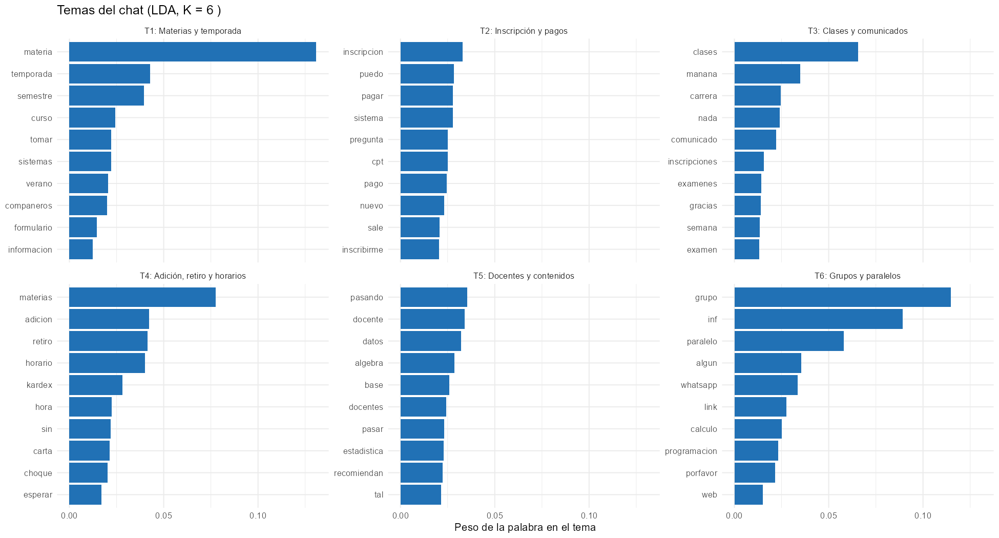
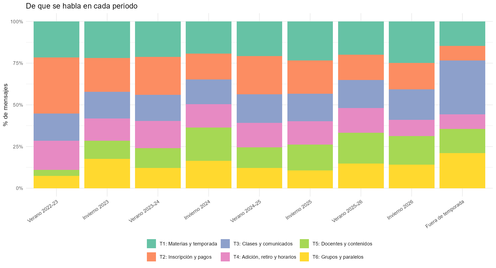
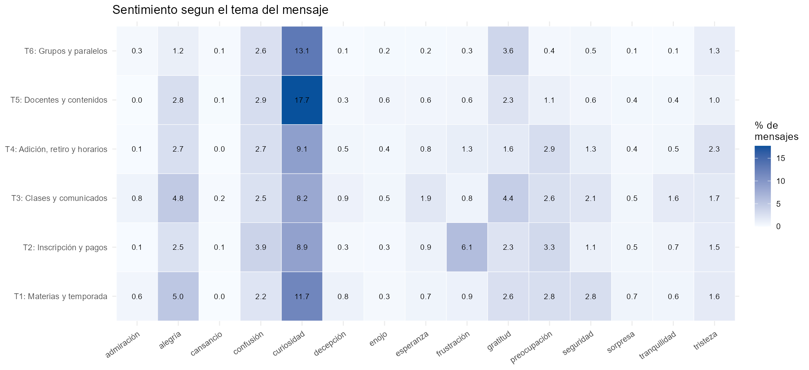
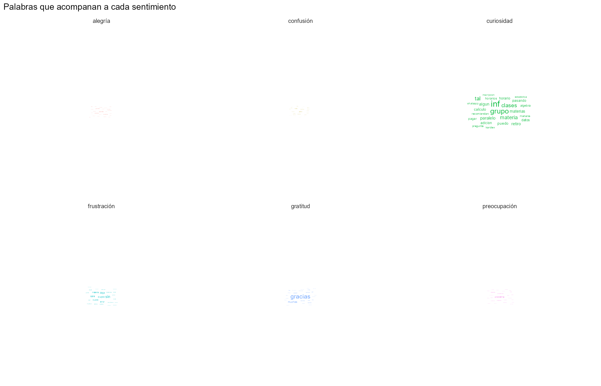

Texto y temas
Palabras más frecuentes
Las palabras más frecuentes giran en torno a materias, grupos y trámites de inscripción.
Bigramas
Los pares de palabras más repetidos confirman los temas del chat: materias, cupos, clases y agradecimientos.
Las palabras más conectadas forman grupos temáticos alrededor de materias y trámites.
Palabras distintivas (TF-IDF)
Las palabras distintivas de cada periodo reflejan lo que se discutía en esa época (inscripciones, sorteos, cupos).
Cada temporada tiene su propio vocabulario característico.
Ley de Zipf
Pocas palabras se usan muchísimo y la gran mayoría casi nunca, como en cualquier texto natural.
Lingüística superficial
| periodo_tipo | tokens | tipos | hapax | ttr | mensajes | palabras_media | mediana |
|---|---|---|---|---|---|---|---|
| Fuera de temporada | 5988 | 2287 | 1407 | 0.382 | 1305 | 10.6 | 8 |
| Invierno | 33852 | 5173 | 2657 | 0.153 | 8825 | 9.0 | 7 |
| Verano | 37868 | 5419 | 2741 | 0.143 | 9451 | 9.3 | 7 |
Temas del chat (LDA)
Gráficas de temas Estas gráficas vienen del modelo de temas (LDA) y se muestran como imagen.



